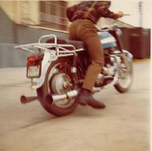
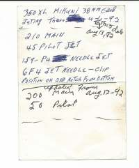
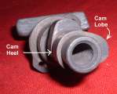
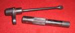
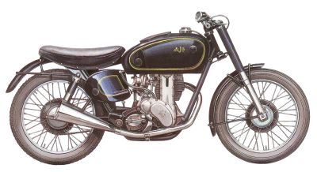
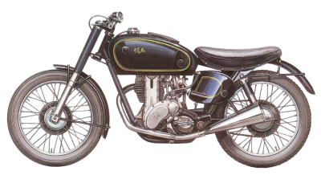

"HOP UP"
INCREASING THE POWER OF YOUR ENGINE

¶ Now believe me, I just LOVE to hop up an engine. However, the best advice I can give you is this... DON'T DO IT! Why do I say this? Because there is a better way. Sell your little bike and... Buy a bigger bike. To put it another way "Speed costs money, how fast can you afford to go?"
Everybody seems to think, "If I just take off the muffler and air cleaner, hang on a big carb, and fiddle with the tires, I'll go really, really fast." Maybe forty years ago this approach might have worked, maybe. But not now. Nowadays, everything is interconnected. If you change one thing you mess up the balance of everything else.
But, you're not going to listen to me are you? Ok, let's go over a few things that might help.
Bigger is better. The cheapest and easiest way to more power is to bore the engine bigger. I don't mean an oversize or two. Even the biggest oversize is only about 1 mm bigger in bore diameter. You need 3, 4, 5mm bigger. To feel a real seat-of-the-pants power increase you need a 10-12% horsepower increase. The best way to get this increase is with more cubic inches. This is true for both two and four stroke engines. Remember, you may have to put in a bigger main jet in the carb because you have a bigger engine. Next comes the intake and the exhaust. Here is where it can get hairy. Some engines respond well to an exhaust pipe change and some do not. Ask around and see what others with your type of bike have done. DON'T be the first on your block to find out what doesn't work. If you change the exhaust, make sure you can get lots of different jets for your carb. That is so you at least have a chance at making it run right if it doesn't work quite as well as the ad said. Don't throw out the old exhaust. If things don't work out, you can always put the old one back on.

If you have a four stroke you can put in a different cam and enlarge the ports and valves. A good polish job on the ports can help. A higher compression ratio can give a nice power increase too. Sometimes you can increase the stroke of the engine to make it bigger. However, this involves a different rod and repositioning the crank pin and sometimes grinding the mouth of the crankcase ... lots of work. 
If you have a two stroke you can cut the height and width of the ports. You can also do this with the ports in the piston, if it has any. Go very slooow with this grinding thing. Enlarge things just a little, then put her together and go for a ride. If you like what you've done, you might want to leave well enough alone. Get greedy, go to far and you will loose everything. The right expansion chamber exhaust can make a really big difference in the horse power and in the power band of the engine. Sometimes weight added to the flywheel can help make the bike more rideable. Changing the reed valves (located right in front of the carb) to ones of better quality can give a power boost.
You will find that many small changes, say one ratio up in compression, a slightly hotter cam, a slightly bigger carb, a little freer flowing exhaust. Stuff like that will work better than one or two big changes. All this will take a lot of time and money. Then, when you finally got all that horse power dialed in, it blows the clutch. You put in a stronger clutch, and it blows third gear. Fix that and the drive chain has to be bigger, and then of all things, there's too much HP for the rear hub. So you put one on from a bigger bike and it weighs more, and then... ! You get the picture? Not only that, when the clutch went I was doing 70-75 mph and it locked up the rear wheel. Pulling in the clutch didn't do one bit of good. I didn't fall off either and it was on asphalt too. To top it off the bike is now worth less money than a stock one. Why? Well, do you really think a hopped up bike was run real easy? Granny only ran it on Sundays against other old ladies in wheelchairs, didn't push it at all.
Change only one thing at a time. That way if the change is good, you will know what helped. Conversely, if you lose power, you will know exactly what to undo.

You can also get more power from Turbo Charging, Super Charging, and Nitros-Oxide injection, but what's the point? Get a bigger bike. Remember,

 |
 |
Copyright © 1999-2002 dansmc.com. All rights reserved.